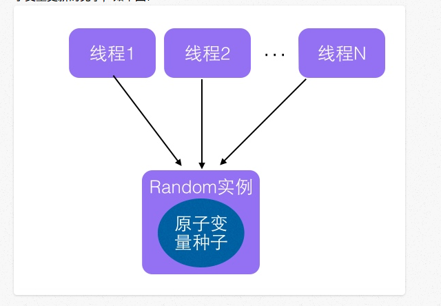
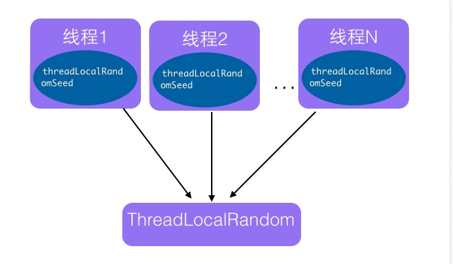
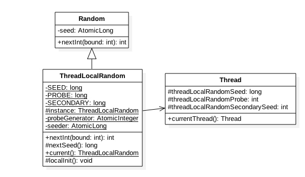

1. 并发包中ThreadLocalRandom类原理剖析
ThreadLocalRandom类是JDK7在JUC包下新增的随机数生成器，它解决了Random类在多线程下多个线程竞争内部唯一的原子性种子变量而导致大量线程自旋重试的不足。本节首先讲解下Random类的实现原理已经它在多线程下使用的局限性，然后引入ThreadLocalRandom类，通过讲解ThreadLocalRandom的实现原理来说明ThreadLocalRandom是如何解决的Random类的不足。
1.1 Random类及其局限性
在JDK7之前包括现在java.util.Random应该是使用比较广泛的随机数生成工具类，另外java.lang.Math中的随机数生成也是使用的java.util.Random的实例。下面先看看java.util.Random的使用：
1 | public class RandomTest { |
- 代码（1）创建一个默认随机数生成器，使用默认的种子。
- 代码（2）输出输出10个在0-5（包含0，不包含5）之间的随机数。
这里提下随机数的生成需要一个默认的种子，这个种子其实是一个long类型的数字,这个种子要么在Random的时候通过构造函数指定，那么默认构造函数内部会生成一个默认的值，有了默认的种子后，如何生成随机数那？
1 | public int nextInt(int bound) { |
如上代码可知新的随机数的生成需要两个步骤
- 首先需要根据老的种子生成新的种子。
- 然后根据新的种子来计算新的随机数。
其中步骤（4）我们可以抽象为seed=f(seed),其中f是一个固定的函数，比如seed= f(seed)=aseed+b;步骤（5）也可以抽象为g(seed,bound)，其中g是一个固定的函数，比如g(seed,bound)=(int)((bound (long)seed) >> 31);在单线程情况下每次调用nextInt都是根据老的种子计算出来新的种子，这是可以保证随机数产生的随机性的。但是在多线程下多个线程可能都拿同一个老的种子去执行步骤（4）计算新的种子，这会导致多个线程产生的新种子是一样的，由于步骤（5）算法是固定的，所以会导致多个线程产生相同的随机值，这并不是我们想要的。所以步骤（4）要保证原子性，也就是说多个线程在根据同一个老种子计算新种子时候，第一个线程的新种子计算出来后，第二个线程要丢弃自己老的种子，要使用第一个线程的新种子来计算自己的新种子，依次类推，只有保证了这个，才能保证多线程下产生的随机数是随机的。Random函数使用一个原子变量达到了这个效果，在创建Random对象时候初始化的种子就保存到了种子原子变量里面，下面看下next()代码：
1 | protected int next(int bits) { |
- 代码（6）获取当前原子变量种子的值
- 代码（7）根据当前种子值计算新的种子
- 代码（8）使用CAS操作，使用新的种子去更新老的种子，多线程下可能多个线程都同时执行到了代码（6）那么可能多个线程都拿到的当前种子的值是同一个，然后执行步骤（7）计算的新种子也都是一样的，但是步骤（8）的CAS操作会保证只有一个线程可以更新老的种子为新的，失败的线程会通过循环从新获取更新后的种子作为当前种子去计算老的种子，可见这里解决了上面提到的问题，也就保证了随机数的随机性。
- 代码（9）则使用固定算法根据新的种子计算随机数。
总结下：每个Random实例里面有一个原子性的种子变量用来记录当前的种子的值，当要生成新的随机数时候要根据当前种子计算新的种子并更新回原子变量。多线程下使用单个Random实例生成随机数时候，多个线程同时计算随机数计算新的种子时候多个线程会竞争同一个原子变量的更新操作，由于原子变量的更新是CAS操作，同时只有一个线程会成功，所以会造成大量线程进行自旋重试，这是会降低并发性能的，所以ThreadLocalRandom应运而生。
1.2. ThreadLocalRandom
为了解决多线程高并发下Random的缺陷，JUC包下新增了ThreadLocalRandom类，下面首先看下它如何使用：1
2
3
4
5
6
7
8
9
10
11
12public class RandomTest {
public static void main(String[] args) {
//(10)获取一个随机数生成器
ThreadLocalRandom random = ThreadLocalRandom.current();
//(11)输出10个在0-5（包含0，不包含5）之间的随机数
for (int i = 0; i < 10; ++i) {
System.out.println(random.nextInt(5));
}
}
}
如上代码（10）调用ThreadLocalRandom.current()来获取当前线程的随机数生成器。下面来分析下ThreadLocalRandom的实现原理。从名字看会让我们联想到基础篇讲解的ThreadLocal，ThreadLocal的出现就是为了解决多线程访问一个变量时候需要进行同步的问题，让每一个线程拷贝一份变量，每个线程对变量进行操作时候实际是操作自己本地内存里面的拷贝，从而避免了对共享变量进行同步。实际上ThreadLocalRandom的实现也是这个原理，Random的缺点是多个线程会使用原子性种子变量，会导致对原子变量更新的竞争，如下图：

那么如果每个线程维护自己的一个种子变量，每个线程生成随机数时候根据自己老的种子计算新的种子，并使用新种子更新老的种子，然后根据新种子计算随机数，就不会存在竞争问题，这会大大提高并发性能，如下图ThreadLocalRandom原理：

1.3 源码分析
首先看下ThreadLocalRandom的类图结构：

可知ThreadLocalRandom继承了Random并重写了nextInt方法，ThreadLocalRandom中并没有使用继承自Random的原子性种子变量。ThreadLocalRandom中并没有具体存放种子，具体的种子是存放到具体的调用线程的threadLocalRandomSeed变量里面的，ThreadLocalRandom类似于ThreadLocal类就是个工具类。当线程调用ThreadLocalRandom的current方法时候ThreadLocalRandom负责初始化调用线程的
threadLocalRandomSeed变量，也就是初始化种子。当调用ThreadLocalRandom的nextInt方法时候，实际上是获取当前线程的threadLocalRandomSeed变量作为当前种子来计算新的种子，然后更新新的种子到当前线程的threadLocalRandomSeed变量，然后在根据新种子和具体算法计算随机数。这里需要注意的是threadLocalRandomSeed变量就是Thread类里面的一个普通long变量，并不是原子性变量，其实道理很简单，因为这个变量是线程级别的，根本不需要使用原子性变量，如果还是不理解可以思考下ThreadLocal的原理。
其中变量seeder和probeGenerator是两个原子性变量，在初始化调用线程的种子和探针变量时候用到，每个线程只会使用一次。
另外变量instance是个ThreadLocalRandom的一个实例，该变量是static的，当多线程通过ThreadLocalRandom的current方法获取ThreadLocalRandom的实例时候其实获取的是同一个，但是由于具体的种子是存放到线程里面的，所以ThreadLocalRandom的实例里面只是与线程无关的通用算法，所以是线程安全的。
下面看看ThreadLocalRandom的主要代码实现逻辑
- Unsafe 机制的使用
1 | private static final sun.misc.Unsafe UNSAFE; |
- ThreadLocalRandom current()方法：该方法获取ThreadLocalRandom实例，并初始化调用线程中threadLocalRandomSeed和threadLocalRandomProbe变量。
1 | static final ThreadLocalRandom instance = new ThreadLocalRandom(); |
1 | static final void localInit() { |
如上代码（12）如果当前线程中threadLocalRandomProbe变量值为0（默认情况下线程的这个变量为0），说明当前线程第一次调用ThreadLocalRandom的current方法，那么就需要调用localInit方法计算当前线程的初始化种子变量。这里设计为了延迟初始化，不需要使用随机数功能时候Thread类中的种子变量就不需要被初始化，这是一种优化。
代码（13）首先计算根据probeGenerator计算当前线程中threadLocalRandomProbe的初始化值，然后根据seeder计算当前线程的初始化种子，然后把这两个变量设置到当前线程。
代码（14）返回ThreadLocalRandom的实例，需要注意的是这个方法是静态方法，多个线程返回的是同一个ThreadLocalRandom实例。
- int nextInt(int bound)方法：计算当前线程的下一个随机数
1 | public int nextInt(int bound) { |
如上代码逻辑步骤与Random相似，我们重点看下nextSeed()方法：
1 | final long nextSeed() { |
如上代码首先使用 r = UNSAFE.getLong(t, SEED)获取当前线程中threadLocalRandomSeed变量的值，然后在种子的基础上累加GAMMA值作为新种子，然后使用UNSAFE的putLong方法把新种子放入当前线程的threadLocalRandomSeed变量。
1.4 总结
本节首先讲解了Random的实现原理以及介绍了Random在多线程下存在竞争种子原子变量更新操作失败后自旋等待的缺点，从而引出ThreadLocalRandom类，ThreadLocalRandom使用ThreadLocal的原理，让每个线程内持有一个本地的种子变量，该种子变量只有在使用随机数时候才会被初始化，多线程下计算新种子时候是根据自己线程内维护的种子变量进行更新，从而避免了竞争